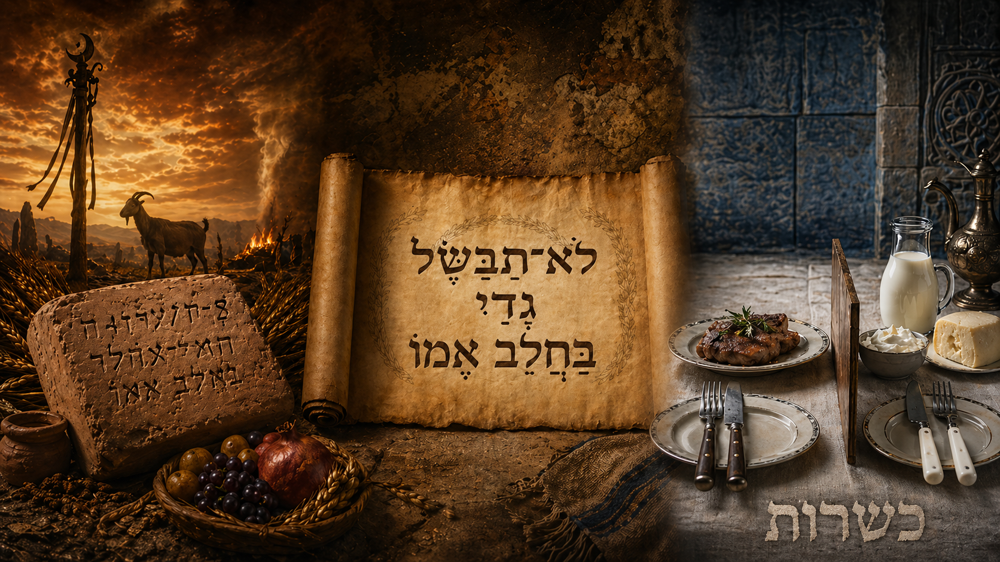

статья Трансформация молока матери: как древний анти-угаритский запрет стал кашрутом (Шмот 23:19, 34:26 → Дварим 14:21 → ...)
⬧ В Торе есть короткие одинаковые фразы, которые выглядят идентичными, но они могут показывать большую историю. Так мы читаем:
| Шмот 23:19 | Начаток первых плодов земли твоей приноси в дом Яхве, Бога твоего; не вари козлёнка в молоке матери его. | רֵאשִׁית בִּכּוּרֵי אַדְמָתְךָ תָּבִיא בֵּית יְהוָה אֱלֹהֶיךָ לֹא־תְבַשֵּׁל גְּדִי בַּחֲלֵב אִמּוֹ | שמות כ״ג:י״ט |
| Шмот 34:26 | Начаток первых плодов земли твоей приноси в дом Яхве, Бога твоего; не вари козлёнка в молоке матери его. | רֵאשִׁית בִּכּוּרֵי אַדְמָתְךָ תָּבִיא בֵּית יְהוָה אֱלֹהֶיךָ לֹא־תְבַשֵּׁל גְּדִי בַּחֲלֵב אִמּוֹ | שמות ל״ד:כ״ו |
| Дварим 14:21 | Не ешьте никакой падали; пришельцу, который в воротах твоих, отдай её, и он будет есть её, или продай чужеземцу; ибо ты народ святой у Яхве, Бога твоего. Не вари козлёнка в молоке матери его. | לֹא תֹאכְלוּ כָל־נְבֵלָה לַגֵּר אֲשֶׁר־בִּשְׁעָרֶיךָ תִּתְּנֶנָּה וַאֲכָלָהּ אוֹ מָכֹר לְנָכְרִי כִּי עַם קָדוֹשׁ אַתָּה לַיהוָה אֱלֹהֶיךָ לֹא־תְבַשֵּׁל גְּדִי בַּחֲלֵב אִמּוֹ | דברים י״ד:כ״א |
По виду они похожи, но если взглянуть на окружающий их фон, то увидим интересные детали.
◊ В каком контексте находятся тексты?
Шмот 23:19 принадлежит раннему яхвистическому ритуальному слою (J-источнику) и находится в конце большого правового блока Шмот 20:22–23:33, который обычно называют Книгой Завета — сефер ха-брит (סֵפֶר הַבְּרִית). Внутри этого блока особенно важен фрагмент Шмот 23:14–19: здесь говорится о трёх ежегодных праздниках — празднике мацы, празднике первой жатвы и празднике собирания плодов на исходе года. Рядом стоят жертвенные предписания: не проливать кровь жертвы на квасное, не оставлять жир праздничной жертвы до утра — и затем появляется наш запрет: «не вари козлёнка в молоке матери его» — ло тевашель гди ба-халев иммо (לֹא־תְבַשֵּׁל גְּדִי בַּחֲלֵב אִמּוֹ). Само расположение стиха показывает: перед нами запрет определённого аграрно-культового действия. Шмот 23:19 соединяет три элемента: первые плоды земли — решит биккурей адматеха (רֵאשִׁית בִּכּוּרֵי אַדְמָתְךָ), то есть начало сельскохозяйственного цикла; дом Яхве — бейт Яхве (בֵּית יְהוָה), куда приносят эти плоды; и запрет варить козлёнка в молоке матери. В таком контексте запрет выглядит как запретный ритуальный жест, связанный с плодородием, урожаем, первинами и праздничной трапезой.
Шмот 34:26 находится в конце так называемого ритуального декалога — Шмот 34:10–26 [1] , своеобразного яхвистического блока заповедей (J-текста), где снова звучат темы праздников, первенцев, Шаббата (שַׁבָּת), Шавуота (שָׁבוּעוֹת), первой жатвы, пасхальной жертвы и первин. Как и в Шмот 23:14–19, финал этого блока соединяет принесение первых плодов в дом Яхве с запретом варить козлёнка в молоке матери. По сути, Шмот 34:26 повторяет тот же ритуальный узел: первины — дом Яхве — запрет варки в молоке матери. Но в Шмот 34 этот запрет стоит в ещё более явном антиязыческом контексте. Перед праздничными нормами звучит жёсткое предупреждение: не заключать союза с народами земли, не участвовать в их жертвенных трапезах, не брать их дочерей, чтобы они не увели Израиль к другим богам. Особенно важен Шмот 34:13–15, где говорится разрушить чужие жертвенники — мизбехотам (מִזְבְּחֹתָם), культовые столбы — маццевотам (מַצֵּבֹתָם), и ашерим (אֲשֵׁרִים), то есть культовые объекты, связанные с Ашера/Ашерат. Сразу после этого запрещается участвовать в жертвенных трапезах чужих богов. На таком фоне фраза «не вари козлёнка в молоке матери его» перестаёт быть странной отдельной деталью. Она становится частью борьбы против ханаанского культового мира. Поэтому Шмот 23:19 и Шмот 34:26 следует читать в одном ключе: это ритуальная граница, поставленная у входа в культ Яхве.
Дварим 14:21 - это часть лакуны Р/Н-источника (Дварим 14:2-21) вставленной в D-текст, так как имеет важные для этого тематические признаки: Израиль — святой народ (14:2,21); Чистые / нечистые животные (14:3–20); ритуальное регулирование. Однако здесь происходит решительный сдвиг. В Шмот вопрос звучал так: что нельзя делать в ритуале первых плодов и праздников перед Яхве? В Дварим вопрос уже другой: как должен есть святой народ Яхве? Уходит тема первых плодов, и праздничного ритуала. Запрет переносится в сферу пищевой дисциплины. Он становится частью идеологии отделённости Израиля: Израиль не ест всё подряд; Израиль не ест падаль; Израиль различает чистое и нечистое; Израиль — святой народ, а потому сама еда становится знаком его особого статуса.
Так мы можем сказать, что по контексту в J-источнике (Шмот 23:19, 34:26) запрет направлен против чужого ритуала, а в Р-источнике (Дварим 14:21) он уже превращён в часть израильской пищевой идентичности. По сути это значит, что уже жрецы (Р-авторы) переопределили данный запрет.
◊ Почему ранние яхвистические авторы в Шмот 23:19 и 34:26 так опасались козлёнка, сваренного в молоке?
В 1928 году случайное открытие гробницы у Минет-эль-Бейда привело к исследованию Рас-Шамры — древнего Угарита. Среди находок была табличка KTU 1.23, где в реконструкции одной строки исследователи увидели ритуальную формулу: [2]
| Текст | Перевод | Угаритская клинопись | Транслитерация |
|---|---|---|---|
| KTU 1.23 | «Вари козлёнка в молоке, ягнёнка — в масле» | 𐎓𐎍𐎟𐎛𐎌𐎚𐎟𐎌𐎁𐎓𐎄𐎟𐎂𐎇𐎗𐎎𐎂𐎟𐎚/𐎅(?)𐎁[𐎟]𐎀𐎂𐎀𐎄𐎟𐎁𐎈𐎍𐎁𐎟𐎀𐎐𐎐𐎅𐎟𐎁𐎈𐎎𐎚 | tb[ḥ g]d bḥlb annh bḥmat |
Перед нами, ханаанский ритуальный фон плодородия, в котором есть представления, связанные с богинями материнства и изобилия, включая круг Ашеры/Ашерат.
Культовая логика авторов текста, была примерно такой: когда у человека появляется приплод, урожай, молоко, молодняк, плоды земли, он воспринимает это не просто как хозяйственную удачу, а как проявление силы плодородия. В древнем аграрном мире плодородие не было отвлечённым «биологическим процессом»; оно мыслилось как сакральная энергия жизни, которую нужно поддерживать, благодарить, умилостивлять и возвращать божеству в виде части полученного избытка. Поэтому в культ приносили не случайный дар, а именно то, что само являлось знаком новой жизни: молодое животное, молоко, масло, первые плоды, первый приплод. В этой логике жертва козлёнка или ягнёнка в молоке была максимально насыщенным символом: приплод стада соединялся с молоком — самой жидкостью вскармливания и продолжения жизни. Получалось как бы «плодородие, принесённое плодородием»: молодой детёныш, рождённый благодаря силе жизни, возвращался божеству через молочную среду, которая эту жизнь должна была питать. Для нас это выглядит жутко; для архаической магической логики это могло выглядеть как мощное сакральное действие.
Похожая архаически-магическая логика стоит и за яхвистическим контекстом, но уже в полемически перевёрнутом виде. Первые плоды урожая — решит биккурей адматеха (רֵאשִׁית בִּכּוּרֵי אַדְמָתְךָ) — приносятся Яхве как владыке земли, урожая, приплода, изобилия и долгой жизни. Именно поэтому запрет «не вари козлёнка в молоке матери его» появляется рядом с первинами, а не в обычном списке пищевых ограничений. Яхвистическая традиция как будто ставит стражу у входа в дом Яхве: да, ты приносишь первые плоды; да, ты благодаришь за урожай и приплод; да, Яхве — источник жизни и изобилия, но не смей благодарить Его языком чужого культа. В этом смысле культ Яхве выступает прямым конкурентом ханаанских культов плодородия, включая круг представлений, связанных с Ашерой/Ашерат. Текст говорит предельно жёстко: когда несёшь первины Яхве, не превращай этот дар в обряд Ашеры.
◊ Где Яхвист (J) совершает максимальный разворот?
Максимальный разворот Яхвист совершает именно в уточнении: «в молоке матери его» — ба-халев иммо (בַּחֲלֵב אִמּוֹ). Он не говорит обобщённо: «не вари мясо в молоке». Он не формулирует сухой пищевой запрет: «не смешивай мясное и молочное». Он выбирает образ, который сразу делает действие почти невыносимым: перед нами не просто молоко, а молоко той самой матери, которая должна была кормить этого детёныша.
Он чётко говорит, что молоко, которое питает жизнь не должно быть смешано со смертью т.е., то что должно питать, становится средой варки. То, что должно сохранять детёныша, становится жидкостью его уничтожения.Поэтому Слово иммо (אִמּוֹ) — «его матери» — делает запрет не только ритуальным, но и эмоционально-символическим. Текст как будто заставляет читателя увидеть не абстрактное животное, а нарушенную связь: детёныш и мать, молоко и жизнь, питание и смерть. Именно это усиливает отвращение.
В этом смысле запрет работает не только против чужого обряда, но и против самой его внутренней логики. Ханаанский ритуал мог говорить: «соедини приплод с молоком — и усилишь плодородие». Яхвист отвечает: «нет, ты не усиливаешь жизнь; ты превращаешь её символ в инструмент смерти». Там, где чужой культ видит сакральную мощь, Яхвист увидел - омерзение.
◊ Почему поздний автор Р/Н уже не видит в варке козлёнка в молоке угаритское язычество?
Автор Дварим 14:21 живёт уже в другом смысловом мире. Для него главный вопрос — не противостояние с угаритским культом, а формирование Израиля как святого народа. Поэтому в Дварим 14:21 та же фраза оказывается уже не среди первых плодов и жертвенного календаря, а среди пищевых законов: чистые и нечистые животные, запрет мерзости — тоэва (תּוֹעֵבָה), запрет падали — невела (נְבֵלָה).
Поздний автор уже не видит перед собой живой ханаанский обряд, против которого нужно прямо полемизировать. Угарит как политический и культовый мир давно исчез. Практика, уже не стоит перед Израилем как непосредственная угроза. Но сама формула запрета сохранилась. Она стала частью священной традиции. Её нельзя выбросить, даже если первоначальный ритуальный фон стал непонятен или далёк.
И тогда поздний автор делает то, что часто делает традиция: он не отменяет древний запрет, а помещает его в новый понятный контекст. Если прежний смысл звучал как: «не совершай чужой ритуал плодородия», то новый смысл становится таким: «не ешь так, как не должен есть святой народ Яхве». Запрет переходит из области культовой полемики в область пищевой идентичности.
Это не значит, что поздний автор «исказил» запрет в грубом смысле. Скорее, он спас его для новой эпохи. Древняя ритуальная формула могла стать непонятной, но она оставалась авторитетной. Поэтому её нужно было заново объяснить внутри действующей богословской системы. Для Р-источника такой системой была идея Израиля как ам кадош (עַם קָדוֹשׁ) — «святого народа». Израиль свят не только у алтаря, но и за столом. Он отличается от народов не только тем, кому приносит жертвы, но и тем, что ест, чего не ест и какие границы проводит в повседневной жизни.
◊ Как перепрошивает данный запрет раввинистическая мысль? [3]
⧼ 1 ⧽ Мидраш
1.1 Мехильта де-рабби Ишмаэль на Шмот 23:19 . Там слово гди (גדי) понимается как представитель более широкой категории чистого домашнего скота: козлёнок, ягнёнок, телёнок. А выражение «в молоке матери» становится не бытовым уточнением, а юридическим признаком молочного компонента. Далее, поскольку эта формула повторяется в Торе три раза, Мехильта читает повторы как намеренные: один раз — чтобы запретить саму варку, другой — чтобы запретить еду, третий — чтобы запретить получение пользы.
1.2 Сифрей Дварим 104 к Дварим 14:21 . Рабби Йосе га-Глили читает выражение «в молоке матери его» буквально и делает из него ограничитель: птица не имеет материнского молока, поэтому запрет басар бе-халав (בָּשָׂר בְּחָלָב) по Торе не распространяется на птицу. Так мидраш показывает, что раввины не только расширяли запрет, но и спорили о его границах.
1.3 Мидраш Таннаим на Дварим 14:19 . Рабби Ишмаэль спрашивает: почему сказано «не вари козлёнка в молоке матери его» в трёх местах? И отвечает: напротив трёх Заветов — брит (ברית), которые Святой, благословен Он, заключил с Израилем: один — на Хореве, один — в степях Моава, и один — на горе Гризим и горе Эйваль. Здесь запрет басар бе-халав (בשר בחלב) уже понимается не просто как пищевой закон, а как знак Завета. Три повтора фразы — это не «случайное дублирование», а трижды закреплённая заветная граница Израиля. Запрет становится маркером верности: Израиль не только ест иначе, но через саму пищевую дисциплину подтверждает Завет с Яхве.
1.4 Мидраш Танхума, Реэ 16:1 . Здесь запрет получает уже агадическое переосмысление: если Израиль не отделяет десятины как положено, Бог поражает урожай ещё до его зрелости — как бы «варит козлят в молоке матерей», то есть губит плоды, пока они ещё питаются от своей «материнской» силы. В этом чтении древняя формула превращается в образ преждевременной гибели урожая и нарушения порядка плодородия.
⧼ 2 ⧽ Мишна
2.1 Мишна Хуллин 8:1 . Здесь Мишна сразу заявляет: «Всякое мясо запрещено варить в молоке, кроме мяса рыб и саранчи. И запрещено поднимать его вместе с сыром на стол, кроме мяса рыб и саранчи. Тот, кто дал обет не есть мясо, разрешён в мясе рыб и саранчи». Мишна уже не говорит узко о «козлёнке в молоке матери». Она формулирует широкий принцип: «всякое мясо запрещено варить в молоке» — коль hа-басар асур левaшель бе-халав (כָּל הַבָּשָׂר אָסוּר לְבַשֵּׁל בְּחָלָב). То есть библейский образ козлёнка уже превращён в общую категорию мяса.
2.2 Мишна Хуллин 8:2 . Здесь сказано: «Тот, кто дал обет не есть мясо, разрешён в мясе рыб и саранчи. Птица может быть поднята на стол вместе с сыром, но не может быть съедена с ним — слова Бейт Шаммай. А Бейт Гиллель говорят: не может быть ни поднята на стол, ни съедена». В этой мишне хорошо видно, как запрет выходит за пределы буквального текста Торы. Тора говорит о козлёнке, а Мишна обсуждает уже птицу, сыр и сам стол. То есть раввинистическая мысль переносит запрет из ритуальной формулы в повседневную дисциплину еды.
⧼ 3 ⧽ Талмуд
3.1 ВТ Хуллин 115б . Школа рабби Ишмаэля учила: «Не вари козлёнка в молоке матери его» сказано три раза: один раз — для запрета еды, один раз — для запрета получения пользы, и один раз — для запрета варки. Здесь талмудическая традиция окончательно превращает три повтора библейской формулы в три юридических запрета: не варить, не есть и не получать пользу.
3.2 ВТ Шаббат 13а . Здесь Талмуд использует запрет птицы с сыром на одном столе как пример раввинской предосторожности. Если человек один сидит за столом, где лежат птица и сыр, он может незаметно перейти от «просто лежит рядом» к «съел вместе». Поэтому раввины запрещают не только саму смесь, но и ситуацию, которая к ней ведёт. Это важный шаг: запрет басар бе-халав (בָּשָׂר בְּחָלָב) выходит за пределы котла и тарелки — он начинает регулировать саму обстановку еды.
⧼ 4 ⧽ Средневековые комментаторы
4.1 Раши на Шмот 34:26 прямо объясняет: «козлёнок» — гди (גדי) — означает не только козлёнка, а вообще мясо, которое входит в запрет мяса с молоком. Он следует линии Хазаль: повтор стиха в разных местах Торы превращается не в литературное дублирование, а в юридический инструмент.
4.1.1 Раши на Дварим 14:21 ясно формулирует ограничение: поскольку Тора трижды говорит «гди» (גדי), это исключает из запрета по Торе дикое животное, птицу и нечистое животное. То есть Раши не просто расширяет запрет до общей категории мяса с молоком, но и фиксирует его границы: не всякая животная пища входит в библейский запрет.
4.2 Ибн Эзра на Шмот 23:19 подходит к запрету как филолог: он отвергает попытки читать слово гди (גדי) как метафору плодов или урожая. Для него гди — это реальный детёныш животного, козлёнок или молодой приплод, а выражение «не вари» — ло тевашель (לא תבשל) означает именно действие варки, а не «созревание» или аллегорический процесс. Тем самым Ибн Эзра удерживает буквальный смысл стиха: речь идёт не о поэтической метафоре, а о конкретном действии с молодым животным и молоком. Он говорит — перед нами не абстрактная идея, а реальная практика, которую Тора считает недопустимой. [4]
4.3 Рашбам на Шмот 23:19 видит в запрете прежде всего нарушение естественной связи между матерью и детёнышем. По его объяснению, у козы обычно бывает много молока, и человек мог бы взять козлёнка и сварить его именно в молоке его матери. Но такое действие выглядит как жестокая и грубая форма обжорства: то, что должно питать детёныша, превращается в среду его уничтожения. Поэтому для Рашбама выражение «в молоке матери его» — ба-халев иммо (בַּחֲלֵב אִמּוֹ) — не случайная деталь, а нравственно сильный образ: Тора отталкивает человека от варварского смешения материнского питания и смерти приплода.
4.4 Хизкуни на Шмот 23:19 объясняет расположение запрета через праздничный контекст. Поскольку рядом говорится о паломнических праздниках и принесении первин, он понимает запрет как предупреждение для времени, когда Израиль особенно много приносит жертв и ест мясо. Именно в такие дни могла возникнуть опасность смешать мясную праздничную трапезу с молоком. Поэтому фраза «не вари козлёнка в молоке матери его» появляется не случайно: она стоит у Хизкуни как практическая ограда внутри ритуально-праздничной жизни Израиля.
4.5 Рамбан на Дварим 14:21 связывает запрет «не вари козлёнка в молоке матери его» с тем, что прямо сказано в этом же стихе: Израиль — «народ святой», ам кадош (עַם קָדוֹשׁ) у Яхве. Для него это не просто техническое пищевое ограничение, а школа святости и внутренней дисциплины. Израиль должен отличаться не только культом, но и самой повседневной едой: то, что ест народ, формирует его нравственный и духовный облик.
4.6 Рамбам, Морэ невухим III:48 пишет, что мясо, сваренное в молоке, само по себе является тяжёлой и грубой пищей, но, вероятнее всего, запрет связан не только с этим. По его мнению, такая смесь могла иметь отношение к идолопоклонническому обряду, поэтому Тора специально отдаляет Израиль от этой практики. [5]
4.7 Бехор Шор на Шмот 23:19 обращает внимание на слово тевашель (תְבַשֵּׁל), которое обычно переводят как «вари», но которое может быть связано и с идеей «созревания» или «доведения до зрелости». Поэтому он понимает стих не только как запрет варки, но и как предупреждение: не задерживай козлёнка при молоке матери, пока он окончательно вырастет и «созреет» за счёт её молока.
4.8 Сфорно на Шмот 23:19 связывает запрет «не вари козлёнка в молоке матери его» с языческими действиями, которые совершались ради умножения плодов и урожая. По его мысли, Тора как бы говорит: не ищи плодородия через магические практики народов, а принеси первые плоды Яхве. Поэтому запрет стоит рядом с первинами не случайно: это отказ от чужой аграрной магии и утверждение, что источник благословения — Яхве, а не ритуальная технология плодородия.
4.9 Абарбанель на Шмот 23:19 также связывает запрет с практиками идолопоклонников. По его объяснению, язычники могли варить козлят в молоке во время сбора урожая, надеясь таким образом умилостивить своих богов и получить благословение на плоды земли и труд рук. Поэтому Тора ставит этот запрет рядом с требованием принести первые плоды в дом Яхве: Израиль должен искать благословение не через чужую магию урожая, а через верность своему Богу.
Средневековые комментаторы предложили широкий спектр понимания запрета «не вари козлёнка в молоке матери его»: Раши читает его через раввинистическую систему басар бе-халав (בשר בחלב) — как запрет варки, еды и пользы; Ибн Эзра защищает буквальный смысл слов гди (גדי), «козлёнок», и ло тевашель (לא תבשל), «не вари»; Рашбам и Рамбан видят в нём этический запрет жестокого смешения материнского молока и смерти детёныша; Хизкуни подчёркивает связь с праздничной трапезой; Бехор Шор пытается прочитать стих через архаический хозяйственный пшат; а Рамбам, Сфорно и Абарбанель подходят ближе всего к историческому ядру запрета — они видят в нём не просто пищевую норму, а отталкивание от чуждой языческой практики, связанной с урожаем, плодородием и магическим способом вызвать благословение. Именно эта линия оказывается особенно важной: ещё до открытия угаритских текстов часть традиционных комментаторов почувствовала, что запрет стоит не у кухонной плиты, а на границе алтаря, где культ Яхве отделяется от ханаанской ритуальной магии плодородия. [6]
Здесь важно уточнить один принципиальный момент: те комментаторы, которые связывали запрет «не вари козлёнка в молоке матери его» с древним противостоянием языческим обрядам, вовсе не отменяли систему кашрута. Для них историческая причина заповеди и её галахическая обязательность не противоречили друг другу. Логика была такой: да, Тора могла дать этот запрет, чтобы отдалить Израиль от чужого ритуала; но раз запрет вошёл в Тору, а Хазаль раскрыли его практические границы, он соблюдается как закон басар бе-халав (בָּשָׂר בְּחָלָב) — мясного и молочного, даже если первоначальный языческий обряд давно исчез.
𐎀 Так, что в итоге? 𐎀
Запрет «не вари козлёнка в молоке матери его» — (לֹא־תְבַשֵּׁל גְּדִי בַּחֲלֵב אִמּוֹ) — не родился как аккуратное правило для кашрута. Кашру молочного и мясного — это уже поздняя, раввинистическая форма его жизни. В начале, в Шмот 23:19 и 34:26, перед нами, жёсткий антиязыческий запрет: не вноси в культ Яхве ханаанскую магию плодородия. Ранний яхвистический текст как будто говорит: когда приносишь первые плоды Яхве, не тащи за собой чужой ритуальный котёл; не благодари Бога Израиля языком Ашеры; не превращай молоко жизни в соус смерти; не делай вид, будто культ Яхве можно обслуживать ханаанскими технологиями плодородия.
Потом Дварим 14:21 переставляет акцент. Старый ритуальный запрет оказывается внутри пищевого блока: чистое и нечистое, падаль, святость Израиля. То, что раньше охраняло алтарь от чужого обряда, теперь начинает охранять тело Израиля от чужой пищевой практики. Запрет переходит из зоны «так нельзя служить Яхве» в зону «так не ест святой народ».
Затем приходит раввинистическая традиция — и совершает галахическую перепрошивку. Для неё три повтора фразы в Торе — уже не след разных контекстов и не память о разных стадиях традиции, а три юридических сигнала: нельзя варить, нельзя есть, нельзя получать пользу. Козлёнок исчезает как конкретное животное. Мать исчезает как живая символическая фигура. Молоко матери превращается в категорию молочного. А древний ритуальный ужас становится системой законов мясного и молочного — басар бе-халав (בָּשָׂר בְּחָלָב).
⤷ Сноски
[1] Stefan Schorch, “Do Not Cook a Kid Still Suckling Its Mother’s Milk,” TheTorah.com.
[3] Zev Farber, “Prohibition of Meat and Milk: Its Origins in the Text,” TheTorah.com.
[4] “After the Golden Calf, Is the Covenant Renewed with a Ritual Decalogue?” TheTorah.com.
[5] Maimonides, Guide for the Perplexed III:48.